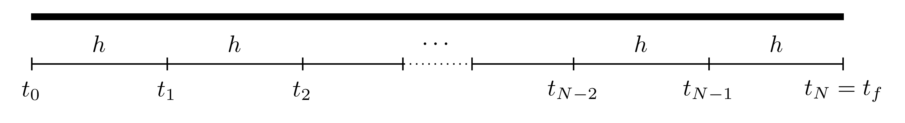

3 The Euler Method
Consider the first order ordinary differential equation (ODE) \[\frac{\mathrm{d} y}{\mathrm{d} t}=f(t,y), \quad t \in [t_0,t_f]\] where \(f\) is a known function, \(t_0\) is an initial time and \(t_f\) is the final time. An initial condition can be prescribed to this differential equation which will assign a “starting value” for the unknown function \(y\) at the starting time as \(y(t_0)=y_0\). The combination of the first order ODE and the initial value gives the Initial Value Problem (or IVP) \[\frac{\mathrm{d} y}{\mathrm{d} t}=f(t,y) \quad \text{with} \quad y(t_0)=y_0, \quad t \in [t_0,t_f].\]
There are many analytic methods for solving first order ordinary differential equations, but they all hold restrictions, like linearity or homogeneity. This chapter will develop the simplest numerical technique for solving any first order ordinary differential equation, this method is called the Euler Method.
Consider the following first order IVP \[\frac{\mathrm{d} y}{\mathrm{d} t}=f(t,y), \quad \text{with} \quad y(t_0)=y_0 \quad t \in [t_0,t_f].\] The function \(f\) is known and in most cases, is assumed to be “well-behaved” (does not have discontinuities or sharp corners). The term \(y_0\) is known as the Initial Value of the function \(y\) at the starting time \(t_0\). Solving this initial value problem is essentially finding an unknown curve \(y(t)\) that starts at the point \((t_0, y_0)\) and ends at time \(t_f\).
The first step in the Euler method (as is the case in most numerical techniques) is to discretise the domain. This changes the domain from the continuous interval \([t_0,t_f]\) to \(N\) subintervals, each with constant1 width \(h\) (sometimes also denoted \(\delta t\)), which is known as the Stepsize. The discretised interval will be the set of points \[\left\{ t_0, t_0+h, t_0+2h, \dots, t_0+Nh \right\}.\] 
The aim of the numerical procedure is to start from the starting point \((t_0,y_0)\) and progressively find consequent points until the final time \(t_f\) is reached.
The Euler method uses the gradient, namely \(\frac{\mathrm{d} y}{\mathrm{d} t}\), at the starting point \((t_0, y_0)\) in order to find the value of \(y\) at the subsequent point which will be labelled \((t_1, y_1)\). This will, in turn, determine the new gradient at \((t_1,y_1)\) and this process is then continued until the final time is reached. The smaller the value of \(h\) is, the more points there will be between \(t_0\) and \(t_f\) resulting in a more accurate final solution to the initial value problem.
The accuracy of the Euler method is usually characterised by how small \(h\) is or how large \(N\) is. Since the stepsize may not always give an appropriate subdivision (like dividing the interval \([0,1]\) into subintervals of width \(0.4\)), then the number of subdivisions \(N\) can be used to find an appropriate \(h\) by using \[h=\frac{t_f-t_0}{N}.\]
3.1 Steps of the Euler Method
Consider the IVP \[\frac{\mathrm{d} y}{\mathrm{d} t}=f(t,y), \quad \text{with} \quad y(t_0)=y_0 \quad t \in [t_0,t_f].\]
The steps of the Euler method will be explained theoretically and applied to this IVP in parallel to demonstrate the steps: \[\frac{\mathrm{d} y}{\mathrm{d} t}=6-2y \quad \text{with} \quad y(0)=0, \quad t \in [0,2].\] In this case, the function on the RHS is \(f(t,y)=6-2y\). Note that this IVP has the exact solution \[y(t)=3-3\mathrm{e}^{-2t}.\]
- Discretise the interval \([t_0,t_f]\) with stepsize \(h\) to form the set of points \[\left\{ t_0, t_0+h, t_0+2h, \dots, t_0+Nh \right\}.\]
Suppose that the interval \([0,2]\) is to be split into \(5\) subintervals, then \(N=5\) and \[h=\frac{t_f-t_0}{N}=\frac{2-0}{5}=0.4.\] Therefore the discretised points are \[\left\{ 0.0, 0.4, 0.8, 1.2, 1.6, 2.0 \right\}.\] Note that \(N\) denotes the number of subintervals and not the number of points, that would be \(N+1\) points since the starting point is \(0\).
- At the starting point \((t_0,y_0)\), the gradient is known since \[y'(t_0)=f(t_0,y_0).\]
At the initial point, \[y'(t_0)=f(t_0,y_0) \quad \implies \quad y'(0)=f(0,0)=6-2(0)=6.\] So the starting gradient is \(6\).
- The next step is to find the the value of \(y\) at the subsequent time \(t_1=t_0+h\). For this purpose, consider the Taylor series expansion of \(y\) at \(t=t_1\), \[y(t_1)=y(t_0+h)=y(t_0)+h y'(t_0)+ \frac{h^2}{2!} y''(t_0)+\mathcal{O}\left(h^3\right).\]
The term \(\mathcal{O}\left(h^3\right)\) simply means that the terms after this point have a common factor of \(h^3\) and these terms are regarded as higher order terms and can be neglected since they are far smaller than the first terms provided \(h\) is small.
Since \(h\) is assumed to be sufficiently small, then all terms higher order terms, in this case \(h^2\) or higher, can be neglected (i.e. \(h^n \approx 0\) for \(n \geq 2\)). Therefore \[y(t_1) \approx y(t_0)+h y'(t_0).\]
Let \(Y_1\) denote the approximated value of the solution at the point \(t_1\), i.e. \(Y_1 \approx y(t_1)\), so in this case, \[Y_1=y_0+h y'(t_0). \tag{3.1}\] This determines the value of \(Y_1\) which is an approximation to \(y(t_1)\).
The point \(Y_1\) can be calculated as follows: \[Y_1=y_0+hy'(t_0)=0+(0.4)(6)=2.4.\] This means that the next point is \((t_1,Y_1)=(0.4,2.4)\).
- This iteration can be continued to find \(Y_{n+1}\) (which is the approximate value of \(y(t_{n+1})\)) for all \(n=1, 2, \dots, N-1\) \[Y_{n+1}=Y_n+h y'(t_n) \quad \text{where} \quad y'(t_n)=f(t_n,Y_n).\]
The values of \(Y_2, Y_3, Y_4\) and \(Y_5\) can be calculated as follows: \[Y_2: \quad y'(t_1)=f(t_1,Y_1) \quad \implies \quad y'(0.4)=f(0.4,2.4)=6-2(2.4)=1.2\] \[\implies \quad Y_2=Y_1+hy'(t_1)=2.4+(0.4)(1.2)=2.88\]
\[Y_3: \quad y'(t_2)=f(t_2,Y_2) \quad \implies \quad y'(0.8)=f(0.8,2.88)=6-2(2.88)=0.24\] \[\implies \quad Y_3=Y_2+hy'(t_2)=2.88+(0.4)(0.24)=2.976\]
\[Y_4: \quad y'(t_3)=f(t_3,Y_3) \quad \implies \quad y'(1.2)=f(1.2,2.976)=6-2(2.976)=0.048\] \[\implies \quad Y_4=Y_3+hy'(t_3)=2.976+(0.4)(0.048)=2.9952\]
\[Y_5: \quad y'(t_4)=f(t_4,Y_4) \quad \implies \quad y'(1.6)=f(1.6,2.9952)=6-2(2.9952)=0.0096\] \[\implies \quad Y_5=Y_4+hy'(t_4)=2.9952+(0.4)(0.0096)=2.99904\]
- The solution to the IVP can now be approximated by the function that passes through the points \[(t_0,Y_0), \quad (t_1, Y_1), \quad \dots \quad (t_N,Y_N).\]
The approximate solution to the IVP \[\frac{\mathrm{d} y}{\mathrm{d} t}=6-2y \quad \text{with} \quad y(0)=0, \quad t \in [0,2]\] is the function that passes through the points: \[(0,0), \quad (0.4,2.4), \quad (0.8,2.88), \quad (1.2,2.976), \quad (1.6,2.9952), \quad (2,2.99904).\] This is a good approximation since the exact locations, as per the exact solution are, (to 4 decimal places): \[(0,0), \quad (0.4,1.6520), \quad (0.8,2.3943), \quad (1.2,2.7278), \quad (1.6,2.8777), \quad (2,2.9451)\] which is not bad for such a coarse interval breakdown.
The Euler method needs \(N\) steps to complete and every step \(n \in \left\{ 1,2,\dots,N \right\}\) requires finding \(y'(t_{n-1})=f(t_{n-1},y_{n-1})\) and \(Y_n=Y_{n-1}+h y'(t_{n-1})\). Of course, the larger \(N\) is, the smaller \(h\) becomes, meaning that more steps will be required but the solution will be closer to the exact solution
Notice that the terms on the right hand side of Equation 3.1 are all known and for this reason, the Euler method is known as an Explicit Method.
3.2 Accuracy
Consider the Taylor series expansion for the function \(y\) at the point \(t_1=t_0+h\), \[y(t_1)=y(t_0+h)=y(t_0)+h y'(t_0)+ \frac{h^2}{2!} y''(t_0)+\mathcal{O}\left(h^3\right).\] Using Taylor’s Theorem2, this can be written as \[y(t_1)=y(t_0+h)=y(t_0)+h y'(t_0)+ \frac{h^2}{2!} y''(\tau_1)\] for some point \(\tau_1\) between \(t_0\) and \(t_1\). The Euler method determines the approximation \(Y_1\) to the function \(y\) at the point \(t_1\), particularly, \[Y_1=y(t_0)+hy'(t_0) \approx y(t_1).\]
The Local Truncation Error at the first step, denoted \(e_1\), is defined as the absolute difference between the exact and approximated values at the first step, and this is given by \[e_1=\left| y(t_1)-Y_1 \right|=\frac{h^2}{2!}\left| y''(\tau_1) \right|.\]
This can be done for all the locations to give a list of local truncation errors \(e_1, e_2, e_3,\dots,e_N\). Note that technically, these errors are hypothetical since the exact solution \(y\), and thus \(y(t_n)\), are not known but these are put as placeholders to establish the full accuracy of the method. In this case, the local truncation error \(e\) is said to be of second order since \(e=\mathcal{O}\left(h^2\right)\).
As the iteration progresses, the errors will accumulate to result in a Global Integration Error denoted \(E\). In this case, the global integration error is \[E=|y(t_f)-Y_N|.\] The global integration error has to be at most the accumulation of all the local truncation errors, namely \[E=|y(t_f)-Y_N| \leq \underbrace{\sum_{n=1}^{N}{e_n}}_{\substack{\text{sum of all} \\ \text{local truncation} \\ \text{errors}}}= \sum_{n=1}^{N}{\frac{h^2}{2!}\left| y''(\tau_n) \right|}=h^2\sum_{n=1}^{N}{\frac{1}{2}\left| y''(\tau_n) \right|}.\]
\[\implies \quad E \leq h^2\sum_{n=1}^{N}{\frac{1}{2}\left| y''(\tau_n) \right|} \tag{3.2}\]
A bound for the sum needs to be found in order bound the global integration error. To this end, consider the set of the second derivatives in the sum above, i.e. \[\left\{ \frac{1}{2}\left| y''(\tau_1) \right|, \frac{1}{2}\left| y''(\tau_2) \right|, \dots, \frac{1}{2}\left| y''(\tau_n) \right| \right\}.\]
Since all these terms take a finite value, then at least one of these terms must be larger than all the rest, this is denoted \(M\) and can be written as \[M=\max\left\{ \frac{1}{2}\left| y''(\tau_1) \right|, \frac{1}{2}\left| y''(\tau_2) \right|, \dots, \frac{1}{2}\left| y''(\tau_n) \right| \right\}.\]
This can also be expressed differently as \[M=\max_{\tau \in [t_0, t_f]}\left\{ \frac{1}{2}\left| y''(\tau) \right| \right\}.\] Therefore, since \[\frac{1}{2}\left| y''(\tau_n) \right| \leq M \quad \text{for all} \quad n=1,2,\dots,N\] then \[\sum_{n=1}^{N}{\frac{1}{2}\left| y''(\tau_n) \right|} \leq \sum_{n=1}^{N}{M}=NM.\] Thus, returning back to the expression for \(E\) in Equation 3.2 \[E \leq h^2\sum_{n=1}^{N}{\frac{1}{2}\left| y''(\tau_n) \right|} \leq NMh^2=Mh \cdot (Nh)=Mh(t_f-t_0)=\mathcal{O}\left(h\right).\] Hence, the global integration error \(E=\mathcal{O}\left(h\right)\), this means that the Euler method is a First Order Method. This means that both \(h\) and the global integration error behave linearly to one another, so if \(h\) is halved, then the global integration error is halved as well.
In conclusion, the local truncation error of the Euler method is \(e=\mathcal{O}\left(h^2\right)\) while the global integration error \(E=\mathcal{O}\left(h\right)\) when \(h\) is small.
Returning to the IVP \[\frac{\mathrm{d} y}{\mathrm{d} t}=6-2y \quad \text{with} \quad y(0)=0, \quad t \in [0,2].\]
The Euler method can be repeated for different values of \(h\) and these can be seen in the figure below.
The table below shows the global integration error for the different values of \(h\):
| \(h\) | \(E\) |
|---|---|
| 0.4 | 0.05399 |
| 0.2 | 0.03681 |
| 0.1 | 0.02036 |
| 0.05 | 0.01060 |
When the value of \(h\) is halved, the global integration error is approximately halved as well.
3.3 Set of IVPs
SO far, the Euler Method has been used to solve a single IVP, however this can be extended to solving a set of linear IVPs.
Consider the set of \(K\) linear IVPs defined on the interval \([t_0,t_f]\): \[\begin{align*} & \frac{\mathrm{d} y_1}{\mathrm{d} t} = a_{11} y_1 + a_{12} y_2 + \dots + a_{1K} y_K + b_1, & y_1(t_0)=\tilde{y}_1 \\ & \frac{\mathrm{d} y_2}{\mathrm{d} t} = a_{21} y_1 + a_{22} y_2 + \dots + a_{2K} y_K + b_2, & y_2(t_0)=\tilde{y}_2 \\ & \qquad \qquad \qquad \qquad \qquad \vdots & \\ & \frac{\mathrm{d} y_K}{\mathrm{d} t} = a_{K1} y_1 + a_{K2} y_2 + \dots + a_{KK} y_K + b_K, & y_K(t_0)=\tilde{y}_K \\ \end{align*}\] where, for \(i,j=1, 2, \dots, K\), the functions \(y_i=y_i(t)\) are unknown, \(a_{ij}\) are known constant coefficients and \(b_i\) are all known (these can generally depend on \(t\)).
This set of initial value problems need to be written in matrix form as \[\frac{\mathrm{d} \boldsymbol{y}}{\mathrm{d} t}=A\boldsymbol{y}+\boldsymbol{b} \quad \text{with} \quad \boldsymbol{y}(t_0)=\boldsymbol{y}_0, \quad t \in [t_0,t_f]\] \[\text{where} \quad \boldsymbol{y}(t)=\begin{pmatrix} y_1(t) \\ y_2(t) \\ \vdots \\ y_K(t) \end{pmatrix}, \quad A=\begin{pmatrix} a_{11} & a_{12} & \dots & a_{1K} \\ a_{21} & a_{22} & \dots & a_{2K} \\ \vdots & \vdots & \ddots & \vdots \\ a_{K1} & a_{K2} & \dots & a_{KK} \end{pmatrix},\] \[\boldsymbol{b}=\begin{pmatrix} b_1 \\ b_2 \\ \vdots \\ b_K \end{pmatrix}, \quad \boldsymbol{y}_0=\begin{pmatrix} \tilde{y}_1 \\ \tilde{y}_2 \\ \vdots \\ \tilde{y}_K \end{pmatrix}.\] In this case, \(\boldsymbol{y}(t)\) is the unknown solution vector, \(A\) is a matrix of constants, \(\boldsymbol{y}_0\) is the vector of initial values and \(\boldsymbol{b}\) is a vector of known terms (possibly depending on \(t\)) and is referred to as the Inhomogeneity or Forcing Term.
The Euler iteration would be performed in a similar way as before. First, the interval \([t_0,t_f]\) needs to be discretised into \(N\) equally spaced subintervals, each of width \(h\) to give the set of discrete times \((t_0, t_1, \dots, t_N)\) where \(t_n=t_0+nh\) for \(n=0,1,\dots,N\). Let \(\boldsymbol{Y}_n\) be the approximation to the function vector \(\boldsymbol{y}\) at the time \(t=t_n\), then \[\boldsymbol{Y}_{n+1}=\boldsymbol{Y}_n+h\boldsymbol{y}'(t_n) \quad \text{where} \quad \boldsymbol{y}'(t_n)=A\boldsymbol{Y_n}+\boldsymbol{b}_n \quad \text{for} \quad n=0,1,2,\dots,N-1\] subject to the initial values \(\boldsymbol{Y}_0=\boldsymbol{y}_0\). (Note that if the vector \(\boldsymbol{b}\) depends on \(t\), then \(\boldsymbol{b}_n=\boldsymbol{b}(t_n)\).)
Consider the two coupled IVPs on the interval \([0,1]\): \[\begin{align*} \frac{\mathrm{d} y}{\mathrm{d} t} = y + 2z, & \quad y(0)=1 \\ \frac{\mathrm{d} z}{\mathrm{d} t} = \frac{3}{2}y-z, & \quad z(0)=0 \end{align*}\]
Before attempting to solve this set of IVPs, it needs to be written in matrix form as \[\frac{\mathrm{d} \boldsymbol{y}}{\mathrm{d} t}=A\boldsymbol{y}+\boldsymbol{b} \quad \text{with} \quad \boldsymbol{y}(0)=\boldsymbol{y}_0.\] In this case, \[\boldsymbol{y}(t)=\begin{pmatrix}y(t) \\ z(t)\end{pmatrix}, \quad A=\begin{pmatrix}1 & 2 \\ \frac{3}{2} & -1\end{pmatrix}, \quad \boldsymbol{b}=\begin{pmatrix}0 \\ 0\end{pmatrix}, \quad \boldsymbol{y}_0=\begin{pmatrix}1 \\ 0\end{pmatrix}.\]
Let \(N=5\), so \[h=\frac{t_f-t_0}{N}=\frac{1-0}{5}=0.2.\] The Euler iteration will be \[\boldsymbol{Y}_{n+1}=\boldsymbol{Y}_n+h\boldsymbol{y}'(t_n) \quad \text{where} \quad \boldsymbol{y}'(t_n)=A \boldsymbol{Y}_n+\boldsymbol{b}_n \quad \text{for} \quad n=0,1,2,3,4.\] This can be written as \[\boldsymbol{Y}_{n+1}=\boldsymbol{Y}_n+h\left[ A \boldsymbol{Y}_n+\boldsymbol{b}_n \right] \quad \text{for} \quad n=0,1,2,3,4\] keeping in mind that \(t_n=hn=0.2n\) the vector \(\boldsymbol{b}_n=\boldsymbol{b}(t_n)=\boldsymbol{0}\) and \(\boldsymbol{Y}_0=\boldsymbol{y}_0\): \[\begin{align*} &\boldsymbol{Y}_1=\boldsymbol{Y}_0+0.2\left[ A \boldsymbol{Y}_0+\boldsymbol{b}_0 \right]=\begin{pmatrix}1 \\ 0\end{pmatrix}+0.2\left[ \begin{pmatrix}1 & 2 \\ \frac{3}{2} & -1\end{pmatrix}\begin{pmatrix}1 \\ 0\end{pmatrix}+\begin{pmatrix}0 \\ 0\end{pmatrix} \right]=\begin{pmatrix}1.2 \\ 0.3\end{pmatrix} \\ &\boldsymbol{Y}_2=\boldsymbol{Y}_1+0.2\left[ A \boldsymbol{Y}_1+\boldsymbol{b}_1 \right]=\begin{pmatrix}1.2 \\ 0.3\end{pmatrix}+0.2\left[ \begin{pmatrix}1 & 2 \\ \frac{3}{2} & -1\end{pmatrix}\begin{pmatrix}1.2 \\ 0.3\end{pmatrix}+\begin{pmatrix}0 \\ 0\end{pmatrix} \right]=\begin{pmatrix}1.56 \\ 0.6\end{pmatrix} \\ &\boldsymbol{Y}_3=\boldsymbol{Y}_2+0.2\left[ A \boldsymbol{Y}_2+\boldsymbol{b}_2 \right]=\begin{pmatrix}1.56 \\ 0.6\end{pmatrix}+0.2\left[ \begin{pmatrix}1 & 2 \\ \frac{3}{2} & -1\end{pmatrix}\begin{pmatrix}1.56 \\ 0.6\end{pmatrix}+\begin{pmatrix}0 \\ 0\end{pmatrix} \right]=\begin{pmatrix}2.112 \\ 0.948\end{pmatrix} \\ &\boldsymbol{Y}_4=\boldsymbol{Y}_3+0.2\left[ A \boldsymbol{Y}_3+\boldsymbol{b}_3 \right]=\begin{pmatrix}2.112 \\ 0.948\end{pmatrix}+0.2\left[ \begin{pmatrix}1 & 2 \\ \frac{3}{2} & -1\end{pmatrix}\begin{pmatrix}2.112 \\ 0.948\end{pmatrix}+\begin{pmatrix}0 \\ 0\end{pmatrix} \right]=\begin{pmatrix}2.9136 \\ 1.3920\end{pmatrix} \\ &\boldsymbol{Y}_5=\boldsymbol{Y}_4+0.2\left[ A \boldsymbol{Y}_4+\boldsymbol{b}_4 \right]=\begin{pmatrix}2.9136 \\ 1.3920\end{pmatrix}+0.2\left[ \begin{pmatrix}1 & 2 \\ \frac{3}{2} & -1\end{pmatrix}\begin{pmatrix}2.9136 \\ 1.3920\end{pmatrix}+\begin{pmatrix}0 \\ 0\end{pmatrix} \right]=\begin{pmatrix}4.0531 \\ 1.9877\end{pmatrix} \\ \end{align*}\] \[\text{therefore} \quad y(1)=4.0531, \quad z(1)=1.9877.\]
3.4 Higher Order IVPs
The previous sections solved one first order IVP and a set of first order IVPs. What happens if a higher order IVP is to be solved? Or a set of higher order IVPs? The difference will be minimal, subject to a few manipulations first.
Consider the \({K}^{\mathrm{th}}\) order linear IVP on the interval \([t_0,t_f]\) \[\frac{\mathrm{d}^{K} y}{\mathrm{d} t^{K}}+a_{K-1} \frac{\mathrm{d}^{K-1} y}{\mathrm{d} t^{K-1}} + \dots + a_2 \frac{\mathrm{d}^{2} y}{\mathrm{d} t^{2}}+a_1 \frac{\mathrm{d} y}{\mathrm{d} t}+a_0 y=f(t) \tag{3.3}\] where \(a_k \in \mathbb{R}\) and \(f\) is a known function. This IVP is to be solved subject to the initial conditions \[y(t_0)=\eta_0, \quad \frac{\mathrm{d} y}{\mathrm{d} t}(t_0)=\eta_1 \quad \dots \quad \frac{\mathrm{d}^{K-1} y}{\mathrm{d} t^{K-1}}(t_0)=\eta_{K-1}.\]
This \({K}^{\mathrm{th}}\) order IVP can be written as a set of \(K\) first order IVPs. Indeed, let the functions \(y_k\) be given by \[y_1(t)=\frac{\mathrm{d} y}{\mathrm{d} t}\] \[y_2(t)=y_1'(t)=\frac{\mathrm{d}^{2} y}{\mathrm{d} t^{2}}\] \[y_3(t)=y_2'(t)=\frac{\mathrm{d}^{3} y}{\mathrm{d} t^{3}}\] \[\vdots\] \[y_{K-3}(t)=y_{K-4}'(t)=\frac{\mathrm{d}^{K-3} y}{\mathrm{d} t^{K-3}}\] \[y_{K-2}(t)=y_{K-3}'(t)=\frac{\mathrm{d}^{K-2} y}{\mathrm{d} t^{K-2}}\] \[y_{K-1}(t)=y_{K-2}'(t)=\frac{\mathrm{d}^{K-1} y}{\mathrm{d} t^{K-1}}\]
Notice that \[\begin{align*} \frac{\mathrm{d} y_{K-1}}{\mathrm{d} t}=\frac{\mathrm{d}^{K} y}{\mathrm{d} t^{K}} & =-a_{K-1} \frac{\mathrm{d}^{K-1} y}{\mathrm{d} t^{K-1}} - \dots - a_2 \frac{\mathrm{d}^{2} y}{\mathrm{d} t^{2}}- a_1 \frac{\mathrm{d} y}{\mathrm{d} t} - a_0 y+f(t) \\ & =-a_{K-1} y_{K-1}- \dots - a_2 y_2 - a_1 y_1 -a_0 y+ f(t) \end{align*}\] Let \(\boldsymbol{y}\) be the vector of the unknown functions \(y, y_1, y_2, \dots, y_{K-1}\). This means that the IVP in Equation 3.3 can be written in matrix form \(\boldsymbol{y}'=A\boldsymbol{y}+\boldsymbol{b}\) as follows: \[\frac{\mathrm{d} \boldsymbol{y}}{\mathrm{d} t}=\frac{\mathrm{d} }{\mathrm{d} t}\begin{pmatrix} y \\ y_1 \\ y_2 \\ \vdots \\ y_{K-3} \\ y_{K-2} \\ y_{K-1} \end{pmatrix}=\begin{pmatrix} y' \\ y_1' \\ y_2' \\ \vdots \\ y_{K-3}' \\ y_{K-2}' \\ y_{K-1}' \end{pmatrix}=\begin{pmatrix} y_1 \\ y_2 \\ y_3 \\ \vdots \\ y_{K-2} \\ y_{K-1} \\ \frac{\mathrm{d}^{K} y}{\mathrm{d} t^{K}} \end{pmatrix}\] \[=\begin{pmatrix} y_1 \\ y_2 \\ y_3 \\ \vdots \\ y_{K-2} \\ y_{K-1} \\ -a_{K-1} y_{K-1}- \dots - a_2 y_2 - a_1 y_1 - a_0 y+ f(t) \end{pmatrix}\] \[=\underbrace{\begin{pmatrix} 0 & 1 & 0 & \dots & 0 & 0 & 0 \\ 0 & 0 & 1 & \dots & 0 & 0 & 0 \\ 0 & 0 & 0 & \dots & 0 & 0 & 0 \\ \vdots & \vdots & \vdots & \ddots & \vdots & \vdots & \vdots \\ 0 & 0 & 0 & \dots & 0 & 1 & 0 \\ 0 & 0 & 0 & \dots & 0 & 0 & 1 \\ -a_0 & -a_1 & -a_2 & \dots & -a_{K-3} & -a_{K-2} & -a_{K-1} \end{pmatrix}}_{A} \underbrace{\begin{pmatrix} y \\ y_1 \\ y_2 \\ \vdots \\ y_{K-3} \\ y_{K-2} \\ y_{K-1} \end{pmatrix}}_{\boldsymbol{y}}+\underbrace{\begin{pmatrix} 0 \\ 0 \\ 0 \\ \vdots \\ 0 \\ 0 \\ f(t) \end{pmatrix}}_{\boldsymbol{b}}=A \boldsymbol{y}+\boldsymbol{b}.\]
The initial condition vector will be \[\boldsymbol{y}_0=\begin{pmatrix} y(0) \\ y_1(0) \\ y_2(0) \\ \vdots \\ y_{K-3}(0) \\ y_{K-2}(0) \\ y_{K-1}(0) \end{pmatrix}=\begin{pmatrix} y(0) \\ \frac{\mathrm{d} y}{\mathrm{d} t}(0) \\ \frac{\mathrm{d}^{2} y}{\mathrm{d} t^{2}}(0) \\ \vdots \\ \frac{\mathrm{d}^{K-3} y}{\mathrm{d} t^{K-3}}(0) \\ \frac{\mathrm{d}^{K-2} y}{\mathrm{d} t^{K-2}}(0) \\ \frac{\mathrm{d}^{K-1} y}{\mathrm{d} t^{K-1}}(0) \end{pmatrix}=\begin{pmatrix} \eta_0 \\ \eta_1 \\ \eta_2 \\ \vdots \\ \eta_{K-3} \\ \eta_{K-2} \\ \eta_{K-1} \end{pmatrix}.\]
The matrix \(A\) is called the Companion Matrix and is a matrix with 1 on the super diagonal and the last row is the minus of the coefficients in the higher order IVP, and zeros otherwise. Now that the \({K}^{\mathrm{th}}\) order IVP has been converted into a set of \(K\) linear IVPs, it can be solved just as in Section 3.3. Note that any linear \({K}^{\mathrm{th}}\) order IVP can always be converted into a set of \(K\) first order IVPs but the converse is not always possible.
Consider the following higher order IVP \[\frac{\mathrm{d}^{4} y}{\mathrm{d} t^{4}}-8\frac{\mathrm{d}^{3} y}{\mathrm{d} t^{3}}+7\frac{\mathrm{d}^{2} y}{\mathrm{d} t^{2}}-\frac{\mathrm{d} y}{\mathrm{d} t}+2y=\cos(t) \quad \text{for} \quad t \in \mathbb{R}_{\geq 0}\] \[\text{with} \quad y(0)=4, \quad \frac{\mathrm{d} y}{\mathrm{d} t}(0)=1, \quad \frac{\mathrm{d}^{2} y}{\mathrm{d} t^{2}}(0)=3, \quad \frac{\mathrm{d}^{3} y}{\mathrm{d} t^{3}}(0)=0.\]
Let \(u=\frac{\mathrm{d} y}{\mathrm{d} t}, v=u'=\frac{\mathrm{d}^{2} y}{\mathrm{d} t^{2}}\) and \(w=v'=\frac{\mathrm{d}^{3} y}{\mathrm{d} t^{3}}\). The derivatives of \(u,v\) and \(w\) are: \[\begin{align*} & u'=v \\ & v'=w \\ & w'= \frac{\mathrm{d}^{4} y}{\mathrm{d} t^{4}}=8\frac{\mathrm{d}^{3} y}{\mathrm{d} t^{3}}-7\frac{\mathrm{d}^{2} y}{\mathrm{d} t^{2}}+\frac{\mathrm{d} y}{\mathrm{d} t}-2y+\cos(t)=8w-7v+u+2y+\cos(t) \end{align*}\] Define the vector \(\boldsymbol{y}={(y, u, v, w)}^{\mathrm{T}}\) \[\frac{\mathrm{d} \boldsymbol{y}}{\mathrm{d} t}=\frac{\mathrm{d} }{\mathrm{d} t}\begin{pmatrix} y \\ u \\ v \\ w \end{pmatrix}=\begin{pmatrix} u \\ v \\ w \\ \cos(t)+8w-7v+u-2y \end{pmatrix}\] \[=\underbrace{\begin{pmatrix} 0 & 1 & 0 & 0 \\ 0 & 0 & 1 & 0 \\ 0 & 0 & 0 & 1 \\ -2 & 1 & -7 & 8 \end{pmatrix}}_{A}\underbrace{\begin{pmatrix} y \\ u \\ v \\ w \end{pmatrix}}_{\boldsymbol{y}}+\underbrace{\begin{pmatrix} 0 \\ 0 \\ 0 \\ \cos(t) \end{pmatrix}}_{\boldsymbol{b}(t)}=A\boldsymbol{y}+\boldsymbol{b}(t).\]
The initial condition vector will be \[\boldsymbol{y}_0=\begin{pmatrix} y(0) \\ u(0) \\ v(0) \\ w(0) \end{pmatrix}=\begin{pmatrix} y(0) \\ \frac{\mathrm{d} y}{\mathrm{d} t}(0)\\ \frac{\mathrm{d}^{2} y}{\mathrm{d} t^{2}}(0) \\ \frac{\mathrm{d}^{3} y}{\mathrm{d} t^{3}}(0) \end{pmatrix}=\begin{pmatrix} 4 \\ 1 \\ 3 \\ 0 \end{pmatrix}.\]
Now the IVP can be solved using the Euler method as before but only the first function is the most relevant, all others have been used as placeholders.
3.4.1 Sets of Higher Order IVPs
The method above can be extended into a set of higher order IVPs.
Consider the following coupled system of higher order IVPs \[y''+6y'+y=\sin(t), \quad z'''-8z''=5y-2y'+\mathrm{e}^{2t}\] \[\text{with} \quad y(0)=1, \quad \frac{\mathrm{d} y}{\mathrm{d} t}(0)=2, \quad z(0)=4, \quad \frac{\mathrm{d} z}{\mathrm{d} t}(0)=1, \quad \frac{\mathrm{d}^{2} z}{\mathrm{d} t^{2}}(0)=2\]
In the case of a coupled system, the vector function \(\boldsymbol{y}\) should consist of all the unknown functions and their derivatives up to but not including their highest order derivative. In other words, \[\frac{\mathrm{d} \boldsymbol{y}}{\mathrm{d} t}=\frac{\mathrm{d} }{\mathrm{d} t}\begin{pmatrix} y \\ y' \\ z \\ z' \\ z'' \end{pmatrix}=\begin{pmatrix} y' \\ y'' \\ z' \\ z'' \\ z''' \end{pmatrix}=\begin{pmatrix} y' \\ -y-6y'+\sin(t) \\ z' \\ z'' \\ 5y-2y'+8z''+\mathrm{e}^{2t} \end{pmatrix}\] \[=\underbrace{\begin{pmatrix} 0 & 1 & 0 & 0 & 0 \\ -1 & -6 & 0 & 0 & 0 \\ 0 & 0 & 0 & 1 & 0 \\ 0 & 0 & 0 & 0 & 1 \\ 5 & -2 & 0 & 0 & 8 \end{pmatrix}}_{A}\underbrace{\begin{pmatrix} y \\ y' \\ z \\ z' \\ z'' \end{pmatrix}}_{\boldsymbol{y}}+\underbrace{\begin{pmatrix} 0 \\ \sin(t) \\ 0 \\ 0 \\ \mathrm{e}^{2t} \end{pmatrix}}_{\boldsymbol{b}}.\] The vector of initial values would be \[\boldsymbol{y}(0)=\begin{pmatrix} y(0) \\ y'(0) \\ z(0) \\ z'(0) \\ z''(0) \end{pmatrix}=\begin{pmatrix} 1 \\ 2 \\ 4 \\ 1 \\ 2 \end{pmatrix}.\]
Now this can be solved just as before with the most relevant terms being the first and third (since those are \(y\) and \(z\)).
3.4.2 Stability of a Set of ODEs
Consider the set of \(K\) homogeneous ODEs \[\frac{\mathrm{d} \boldsymbol{y}}{\mathrm{d} t}=A\boldsymbol{y}.\] Let \(\lambda_1, \lambda_2, \dots, \lambda_K\) be the eigenvalues of the matrix \(A\) and \(\boldsymbol{v}_1, \boldsymbol{v}_2, \dots, \boldsymbol{v}_K\) be their distinct corresponding eigenvectors (distinct for the sake argument). Analytically, the set of differential equations \(\boldsymbol{y}'=A\boldsymbol{y}\) has the general solution \[\boldsymbol{y}(t)=C_1 \boldsymbol{v}_1 \mathrm{e}^{\lambda_1 t}+C_2 \boldsymbol{v}_2 \mathrm{e}^{\lambda_2 t}+\dots+C_K \boldsymbol{v}_K \mathrm{e}^{\lambda_K t}\] where \(C_1, C_2, \dots, C_n\) are constants that can be determined from the initial values.
Definition 3.1 The initial value problem \[\frac{\mathrm{d} \boldsymbol{y}}{\mathrm{d} t}=A\boldsymbol{y}+\boldsymbol{b} \quad \text{with} \quad \boldsymbol{y}(0)=\boldsymbol{y}_0\] is said to be Asymptotically Stable if \(\boldsymbol{y} \to \boldsymbol{0}\) as \(t \to \infty\), in other words, all functions in \(\boldsymbol{y}\) tend to 0 as \(t\) tends to infinity.
This definition will be important when looking at the long term behaviour of solutions from the eigenvalues to then determine stepsize bounds.
Theorem 3.1 The initial value problem \[\frac{\mathrm{d} \boldsymbol{y}}{\mathrm{d} t}=A\boldsymbol{y}+\boldsymbol{b}\] is asymptotically stable if all the eigenvalues of the matrix \(A\) have negative real parts. If \(A\) has at least one eigenvalue with a non-negative real part, then the system is not asymptomatically stable.
Notice that the stability of a set of ODEs does not depend on the forcing term \(\boldsymbol{b}\) nor does it depend on the initial condition \(\boldsymbol{y}(0)\).
3.5 Limitations of the Euler Method
In some cases, if the stepsize \(h\) is taken to be too large, then the Euler method can give misleading results.
For example, consider the initial value problem: \[\frac{\mathrm{d} y}{\mathrm{d} t}=-3y \quad \text{with} \quad y(0)=1, \quad t\in [0,5].\] Choosing a large stepsize \(h\) can render the method ineffective. Case in point, when \(h=1\), the approximate solution oscillates and grows quite rapidly, however choosing a smaller value of \(h\), say \(h=0.1\), gives a very good approximation to the exact solution. These are illustrated in the figures below.
Another situation when the Euler method fails is when the IVP does not have a unique solution. For example, consider the IVP: \[\frac{\mathrm{d} y}{\mathrm{d} t}=y^{\frac{1}{3}} \quad \text{with} \quad y(0)=0, \quad t \in [0,2].\] This has the exact solution \(y(t)=\left( \frac{2}{3}t \right)^{\frac{3}{2}}\) however this is not unique since \(y(t)=0\) is also a perfectly valid solution. The Euler method in this case will not be able to capture the first non-trivial solution but will only capture the second trivial solution giving a straight line at 03.
3.5.1 Bounds on the Stepsize
Consider the initial value problem \[\frac{\mathrm{d} \boldsymbol{y}}{\mathrm{d} t}=A\boldsymbol{y}+\boldsymbol{b} \quad \text{with} \quad \boldsymbol{y}(0)=\boldsymbol{y}_0.\] If \(A\) is asymptotically stable, then a maximum bound \(h_0\) for the stepsize can be found to ensure that the iterations converge. (This means that asymptotic stability of \(A\) is a necessary and sufficient condition for the existence of an upper bound \(h_0\) such that if \(h<h_0\), then the Euler iteration converges.)
If the stepsize is too large, then the method may not converge but on the other hand if it is too low, then the iteration will take a considerable amount of time to perform. Therefore an “optimal” stepsize is needed to obtain sufficiently accurate solutions.
Consider the following initial value problem \[\frac{\mathrm{d} y}{\mathrm{d} t}=100(\sin(t)-y) \quad \text{with} \quad y(0)=0.\] The figure below shows the Euler method being used to solve the initial value problem in the interval \([0,1]\) for the stepsizes \(h=0.03, 0.02, 0.01, 0.001\).
When \(h=0.03\), the Euler method does not converge. At \(h=0.02\), the Euler method converges but there clearly is a distinct artefact in the solution that shows a slight oscillation. For \(h\) less than \(0.02\), this oscillation is no longer observed and the Euler method is convergent.
3.5.2 Exact Bound
Consider the IVP \[\frac{\mathrm{d} \boldsymbol{y}}{\mathrm{d} t}=A\boldsymbol{y}+\boldsymbol{b} \quad \text{with} \quad \boldsymbol{y}(0)=\boldsymbol{y}_0.\] Let \(\lambda_1, \lambda_2, \dots, \lambda_K\) be the eigenvalues of \(A\). Suppose that the matrix \(A\) is asymptotically stable (i.e. \(\Re(\lambda_k)<0\) for all \(k=1,2,\dots,K\)). In order for the Euler iterations to converge, the stepsize \(h\) needs be less than the threshold stepsize \(h_0\) where \[h_0=2\min_{k=1,2,\dots,K}\left\{ \frac{|\Re(\lambda_k)|}{|\lambda_k|^2} \right\} \tag{3.4}\] \[\text{or} \quad h_0=2 \min_{k=1,2,\dots,K} \left\{ \frac{1}{|\lambda_k|} \right\} \quad \text{if all the eigenvalues are real.}\] In other words, if the initial value problem is asymptotically stable, then the Euler method is stable if an only if \(h<h_0\). This means that the convergence of the Euler is characterised by the eigenvalue that is furthest away from the origin, also called the Dominant Eigenvalue.
!!!!!DO!!!!!
Consider the system of differential equations \(\boldsymbol{y}'=A\boldsymbol{y}\) with \(\boldsymbol{y}(0)=\boldsymbol{y}_0\) where \[A=\begin{pmatrix} -1 & 0 & 3 \\ 0 & -10 & 0 \\ 18 & -1 & -100 \end{pmatrix}.\] The eigenvalues of the matrix \(A\) are \(-0.4575, -100.5425, -10\). Since all the eigenvalues are negative, this system is asymptotically stable. Since all the eigenvalues are real, then the threshold stepsize for a convergent Euler method is \[h_0=2\min\left\{ \frac{1}{|\lambda_k|} \right\} =2\min \left\{ \frac{1}{|-0.4575|}, \frac{1}{|-100.5425|}, \frac{1}{|-10|} \right\}\] \[=2\min \left\{ 2.0858, 0.0099, 0.1 \right\}=2 \times 0.0099=0.0199.\]
Solutions for different stepsizes are as shown below with the initial values \(y_1(0)=1\) (blue), \(y_2(0)=2\) (red) and \(y_3(0)=1\) (magenta). It can be seen that if \(h \geq h_0\), then at least one solution will diverge but if \(h<h_0\), then all solutions converge to 0.
3.5.3 Estimated Bound
One drawback in attempting to determine the value of \(h_0\) using Equation 3.4 is that all the eigenvalues of the matrix \(A\) have to be determined before \(h_0\) can be found. This can be computationally expensive for especially for very large matrices.
An estimate for the threshold stepsize \(h_0\) can be found with far fewer computations using the sup-norm \(\left\| \cdot \right\|_{\infty}\) (also known as the infinity norm or the Chebyshev norm). Recall that for a vector \(\boldsymbol{x}=(x_1, x_2, \dots, x_n)\), the sup-norm of \(\boldsymbol{x}\) is the maximum absolute value in the vector, i.e. \[\left\| \boldsymbol{x} \right\|_{\infty}=\max |x_n|.\]
Whereas for a matrix \(A\), the sup-norm of \(A\) is the maximal absolute row sum. In other words, for a given matrix \(A\), take the absolute value of all the terms, take the sum of each row and the sup-norm will be the largest out of these.
Consider the vector \(\boldsymbol{x}\) and matrix \(M\) given by \[\boldsymbol{x}=\begin{pmatrix} 1 \\ -4 \\ -9 \\ 7 \end{pmatrix}, \quad M=\begin{pmatrix} 5 & 2 & 4 & 1 \\ -9 & 5 & 3 & -7 \\ 6 & 0 & -1 & 4 \\ 9 & 5 & -2 & 4 \end{pmatrix}.\]
The sup-norm of \(\boldsymbol{x}\) is simply the largest absolute element which is \(9\), therefore \(\left\| \boldsymbol{x} \right\|_{\infty}=9\).
As for \(M\), to find the sup-norm, first take the absolute value of all the terms, then add the rows. The sup-norm is the maximum element that results: \[ \begin{pmatrix} 5 & 2 & 4 & 1 \\ -9 & 5 & 3 & -7 \\ 6 & 0 & -1 & 4 \\ 9 & 5 & -2 & 4 \end{pmatrix} \quad \xrightarrow[| \bullet |]{} \quad \begin{pmatrix} 5 & 2 & 4 & 1 \\ 9 & 5 & 3 & 7 \\ 6 & 0 & 1 & 4 \\ 9 & 5 & 2 & 4 \end{pmatrix} \left. \begin{matrix} \to 12 \\ \to 24 \\ \to 11 \\ \to 20 \end{matrix} \right\} \text{maximum is 24.} \] Therefore \(\left\| M \right\|_{\infty}=24\).
Both of these can be found in MATLAB using norm(x,Inf) and norm(M,Inf).
Theorem 3.2 Consider the set of linear IVPs \[\frac{\mathrm{d} \boldsymbol{y}}{\mathrm{d} t}=A\boldsymbol{y}+\boldsymbol{b} \quad \text{with} \quad \boldsymbol{y}(0)=\boldsymbol{y}_0\] where \(A\) is asymptotically stable. Then the Euler method is numerically convergent for any choice of \(h\) which satisfies \[\left\| \mathcal{I}+hA \right\|_{\infty} \leq 1.\]
Computing all the eigenvalues of the matrix \(A\) can be computationally expensive but obtaining the sup-norm is takes far fewer computations, however as a drawback, the resulting value of \(h_0\) would be an estimate.
Consider the differential equation \(\boldsymbol{y}'=A\boldsymbol{y}\) where \[ A=\begin{pmatrix} -2 & 1 & 0 & 0 & 0 \\ 1 & -2 & 1 & 0 & 0 \\ 0 & 1 & -2 & 1 & 0 \\ 0 & 0 & 1 & -2 & 1 \\ 0 & 0 & 0 & 1 & -2 \end{pmatrix}. \]
To find the upper bound for the stepsize for which the Euler method converges, first evaluate \(\mathcal{I}+hA\): \[ \mathcal{I}+hA=\begin{pmatrix} 1-2h & h & 0 & 0 & 0 \\ h & 1-2h & h & 0 & 0 \\ 0 & h & 1-2h & h & 0 \\ 0 & 0 & h & 1-2h & h \\ 0 & 0 & 0 & h & 1-2h \end{pmatrix} \]
To find the sup-norm, take the absolute value of all the terms and find the maximal row sum: \[ \xrightarrow[| \bullet |]{} \quad \begin{pmatrix} |1-2h| & h & 0 & 0 & 0 \\ h & |1-2h| & h & 0 & 0 \\ 0 & h & |1-2h| & h & 0 \\ 0 & 0 & h & |1-2h| & h \\ 0 & 0 & 0 & h & |1-2h| \end{pmatrix} \begin{matrix} \to \\ \to \\ \to \\\to \\ \to \end{matrix}\begin{matrix} |1-2h|+h \\ |1-2h|+2h \\ |1-2h|+2h \\ |1-2h|+2h \\ |1-2h|+h. \end{matrix} \] Let \(a=|1-2h|+2h\) and \(b=|1-2h|+h\). Since \(h>0\), then \(a>b\), therefore \[\left\| \mathcal{I}+hA \right\|_{\infty}=|1-2h|+2h.\]
In order to satisfy the inequality \(\left\| \mathcal{I}+hA \right\|_{\infty}\leq 1\), consider the cases when \(1-2h \geq 0\) and \(1-2h<0\) separately:
If \(1-2h \geq 0\), then \(h \leq \frac{1}{2}\): \[\left\| \mathcal{I}+hA \right\|_{\infty}=|1-2h|+2h=1-2h+2h=1.\] Therefore \(\left\| \mathcal{I}+hA \right\|_{\infty}=1 \leq 1\) is indeed true.
If \(1-2h < 0\), then \(h > \frac{1}{2}\): \[\left\| \mathcal{I}+hA \right\|_{\infty}=|1-2h|+2h=2h-1+2h=4h-1.\] If \(\left\| \mathcal{I}+hA \right\|_{\infty} \leq 1\), then \(4h-1 \leq 1\). Simplifying this would result in \(h \leq \frac{1}{2}\) which contradicts with the assumption that \(h>\frac{1}{2}\).
From these two cases, it is clear that \(h \ngtr \frac{1}{2}\) (since that case leads to a contradiction), therefore \(h \leq \frac{1}{2}\). Thus for a convergent Euler method, the stepsize \(h\) must be less than the threshold stepsize \(h_0=\frac{1}{2}\).
This can be compared to the exact bound; the eigenvalues of the matrix \(A\) are \[-3.7321, \quad -3, \quad -2, \quad -1, \quad -0.2679.\] Therefore \[h_0=2 \min \left\{ \frac{1}{|\lambda_k|} \right\}=0.5359\] which is a larger bound compared to the one obtained using the sup-norm method. Observe that if the size of the matrix was larger but followed the same theme (i.e. \(2\) on the main diagonal and \(-1\) and the sub and super diagonals), then no further calculations are required for the sup-norm method, the outcome will still be \(h_0=\frac{1}{2}\). As for the eigenvalue method, all the eigenvalues have to be recalculated again.
Consider the differential equation \(\boldsymbol{y}'=A\boldsymbol{y}\) where \[ A=\begin{pmatrix} -1 & 0 & 0 & 0 & 0 \\ 1 & -1 & 0 & 0 & 0 \\ 0 & 1 & -1 & 0 & 0 \\ 0 & 0 & 1 & -1 & 0 \\ 0 & 0 & 0 & 1 & -1 \end{pmatrix}. \]
To find the upper bound for the stepsize for which the Euler method converges, first evaluate \(\mathcal{I}+hA\): \[ \mathcal{I}+hA=\begin{pmatrix} 1-h & 0 & 0 & 0 & 0 \\ h & 1-h & 0 & 0 & 0 \\ 0 & h & 1-h & 0 & 0 \\ 0 & 0 & h & 1-h & 0 \\ 0 & 0 & 0 & h & 1-h \end{pmatrix} \] To find the sup-norm, take the absolute value of all the terms and find the maximal row sum: \[ \xrightarrow[| \bullet |]{} \quad \begin{pmatrix} |1-h| & 0 & 0 & 0 & 0 \\ h & |1-h| & 0 & 0 & 0 \\ 0 & h & |1-h| & 0 & 0 \\ 0 & 0 & h & |1-h| & 0 \\ 0 & 0 & 0 & h & |1-h| \end{pmatrix} \begin{matrix} \to \\ \to \\ \to \\\to \\ \to \end{matrix}\begin{matrix} |1-h| \\ |1-h|+h \\ |1-h|+h \\ |1-h|+h \\ |1-h|+h. \end{matrix} \] Let \(a=|1-h|+h\) and \(b=|1-h|\). Clearly \(a>b\) since \(h>0\), therefore \[\left\| \mathcal{I}+hA \right\|_{\infty}=|1-h|+h.\]
In order to satisfy the inequality, \(\left\| \mathcal{I}+hA \right\|_{\infty}\leq 1\), consider the cases when \(1-h \geq 0\) and \(1-h<0\):
If \(1-h \geq 0\), then \(h \leq 1\): \[\left\| \mathcal{I}+hA \right\|_{\infty}=|1-h|+h=1-h+h=1,\] therefore \(\left\| \mathcal{I}+hA \right\|_{\infty} \leq 1\) is indeed true.
If \(1-h < 0\), then \(h > 1\): \[\left\| \mathcal{I}+hA \right\|_{\infty}=|1-h|+h=h-1+h=2h-1.\] If \(\left\| \mathcal{I}+hA \right\|_{\infty} \leq 1\), then \(2h-1 \leq 1\), meaning that \(h \leq 1\) which contradicts with the assumption that \(h>1\).
This means that for a convergent Euler method, the stepsize \(h\) must be less than \(h_0=1\).
This can be compared to the exact upper bound. The eigenvalues of the matrix \(A\) are just \(-1\) five times, therefore \[h_0=2 \min \left\{ \frac{1}{|\lambda_k|} \right\}=2,\] this shows that the sup-norm method gives a tighter than using eigenvalues.
The sup-norm method works well when the matrix in question has a diagonal, bidiagonal or tridiagonal structure where the diagonal terms are the same. In general, the sup-norm method might not be suitable for any matrix.
Consider the differential equation \(\boldsymbol{y}'=A\boldsymbol{y}\) where \[A=\begin{pmatrix} -1 & -2 \\ 4 & -3 \end{pmatrix}.\]
Find the sup-norm: \[\mathcal{I}+hA=\begin{pmatrix} 1-h & -2h \\ 4h & 1-3h \end{pmatrix} \xrightarrow[| \bullet |]{} \begin{pmatrix} |1-h| & 2h \\ 4h & |1-3h| \end{pmatrix} \begin{matrix} \to \\ \to \end{matrix} \begin{matrix} |1-h|+2h \\ |1-3h|+4h \end{matrix} \] Let \(a=|1-h|+2h\) and \(b=|1-3h|+4h\). Here, it is not obvious which is larger, \(a\) or \(b\). Therefore, consider the three cases \(0<h<\frac{1}{3}\), \(\frac{1}{3}<h<1\) and \(h>1\).
\(0<h<\frac{1}{3}\): In this case, \(1-h>0\) and \(1-3h>0\), therefore \(a=|1-h|+2h=1+h\) and \(b=|1-3h|+4h=1+h\), hence \(\left\| \mathcal{I}+hA \right\|_{\infty}=1+h\). In order to satisfy \(\left\| \mathcal{I}+hA \right\|_{\infty} \leq 1\), this would mean that \(h<0\) which contradicts with the fact that \(h>0\). Therefore \(h \notin \left( 0,\frac 13 \right)\).
\(\frac{1}{3}<h<1\): In this case, \(1-h>0\) and \(1-3h<0\), therefore \(a=|1-h|+2h=1+h\) and \(b=|1-3h|+4h=7h-1\). This should now be split into two subcases to check which one will lead to a contradiction:
- Suppose that \(a>b\), then \[1+h > 7h-1 \quad \implies \quad h<\frac{1}{3}\] which contradicts with \(h>\frac13\)
- Suppose that \(a<b\), then \[1+h < 7h-1 \quad \implies \quad h>\frac{1}{3}\] not leading to any contradiction. therefore since \(b>a\), then \(\left\| \mathcal{I}+hA \right\|_{\infty}=b=7h-1\).
In order to satisfy \(\left\| \mathcal{I}+hA \right\|_{\infty} \leq 1\) then \(h<\frac{2}{7}\) which contradicts with the fact that \(\frac{1}{3}<h\). Therefore \(h \notin \left( \frac 13,1 \right)\).
- \(h>1\): In this case, \(1-h<0\) and \(1-3h<0\), therefore \(a=|1-h|+2h=3h-1\) and \(b=|1-3h|+4h=7h-1\). Clearly \(b>a\) since \(h>0\), so \(\left\| \mathcal{I}+hA \right\|_{\infty}=7h-1\). In order to satisfy \(\left\| \mathcal{I}+hA \right\|_{\infty} \leq 1\) then \(h<\frac{2}{7}\) which contradicts with the fact that \(h>1\). This means that \(h \ngtr 1\).
So in every possible case, there will be a contradiction when using the sup-norm method. This does not mean that the system is asymptotically unstable, in fact, the eigenvalues of the matrix \(A\) are \(-2 \pm 2.65 \mathrm{i}\) meaning that the system is asymptotically stable and the threshold stepsize is in fact \(h_0=0.0992\).
This example shows that the sup-norm method cannot be used for any matrix system, but if a matrix has a banded structure, then it would be appropriate and would require fewer computations compared to finding all the eigenvalues.
3.6 MATLAB Code
The following MATLAB code performs the Euler iteration for the following set of IVPs on the interval \([0,1]\): \[\begin{align*} & \frac{\mathrm{d} u}{\mathrm{d} t}=2u+v+w+\cos(t), & \quad u(0)=0 \\ & \frac{\mathrm{d} v}{\mathrm{d} t}=\sin(u)+\mathrm{e}^{-v+w}, & \quad v(0)=1 \\ & \frac{\mathrm{d} w}{\mathrm{d} t}=uv-w, & \quad w(0)=0. \end{align*}\]
Note that this code is built for a general case that does not have to be linear even though the entire derivation process was built on the fact that the system is linear.
function IVP_Euler
%% Solve a set of first order IVPs using Euler
% This code solves a set of IVP when written explicitly
% on the interval [t0,tf] subject to the initial conditions
% y(0)=y0. The output will be the graph of the solution(s)
% and the vector value at the final point tf. Note that the
% IVPs do not need to be linear or homogeneous.
%% Lines to change:
% Line 28 : t0 - Start time
% Line 31 : tf - End time
% Line 34 : N - Number of subdivisions
% Line 37 : y0 - Vector of initial values
% Line 105+ : Which functions to plot, remembering to assign
% a colour, texture and legend label
% Line 125+ : Set of differential equations written
% explicitly. These can also be non-linear and
% include forcing terms. These equations can
% also be written in matrix form if the
% equations are linear.
%% Set up input values
% Start time
t0=0;
% End time
tf=1;
% Number of subdivisions
N=50;
% Column vector initial values y0=y(t0)
y0=[0;1;0];
%% Set up IVP solver parameters
% T = Vector of times t0,t1,...,tN.
% This is generated using linspace which splits the
% interval [t0,tf] into N+1 points (or N subintervals)
T=linspace(t0,tf,N+1);
% Stepsize
h=(tf-t0)/N;
% Number of differential equations
K=length(y0);
%% Perform the Euler iteration
% Y = Solution matrix
% The matrix Y will contain K rows and N+1 columns. Every
% row corresponds to a different IVP and every column
% corresponds to a different time. So the matrix Y will
% take the following form:
% y_1(t_0) y_1(t_1) y_1(t_2) ... y_1(t_N)
% y_2(t_0) y_2(t_1) y_2(t_2) ... y_2(t_N)
% ...
% y_K(t_0) y_K(t_1) y_K(t_2) ... y_K(t_N)
Y=zeros(K,N+1);
% The first column of the vector Y is the initial vector y0
Y(:,1)=y0;
% Set the current time t to be the starting time t0 and the
% current value of the vector y to be the strtaing values y0
t=t0;
y=y0;
for n=2:1:N+1
dydt=DYDT(t,y,K); % Find gradient at the current step
y=y+h*dydt; % Find y at the current step
t=T(n); % Update the new time
Y(:,n)=y; % Replace row n in Y with y
end
%% Setting plot parameters
% Clear figure
clf
% Hold so more than one line can be drawn
hold on
% Turn on grid
grid on
% Setting font size and style
set(gca,'FontSize',20,'FontName','Times')
% Label the axes
xlabel('$t$','Interpreter','Latex')
ylabel('$\mathbf{y}(t)$','Interpreter','Latex')
% Plot the desried solutions. If all the solutions are
% needed, then consider using a for loop in that case
plot(T,Y(1,:),'-b','LineWidth',2)
plot(T,Y(2,:),'-r','LineWidth',2)
plot(T,Y(3,:),'-k','LineWidth',2)
% Legend labels
legend('$y_1(t)$','$y_2(t)$','$y_3(t)$')
set(legend,'Interpreter','Latex')
% Display the values of the vector y at tf
disp(strcat('The vector y at t=',num2str(tf),' is:'))
disp(Y(:,end))
end
function [dydt]=DYDT(t,y,K)
% When the equation are written in explicit form
dydt=zeros(K,1);
dydt(1)=2*y(1)+y(2)+y(3)+cos(t);
dydt(2)=sin(y(1))+exp(-y(2)+y(3));
dydt(3)=y(1)*y(2)-y(3);
% If the set of equations is linear, then these can be
% written in matrix form as dydt=A*y+b(t). For example, if
% the set of equations is:
% dudt = 7u - 2v + w + exp(t)
% dvdt = 2u + 3v - 9w + cos(t)
% dwdt = 2v + 5w + 2
% Then:
% A=[7,-2,1;2,3,-9;0,2,5];
% b=@(t) [exp(t);cos(t);2];
% dydt=A*y+b(t)
endIn most cases, the interval width \(h\) is constant but more advanced numerical techniques have different subinterval widths.↩︎
Taylor’s Theorem states that for a function \(f\) that is at least \(N+1\) times differentiable in the open interval \((x,x_0)\) (or \((x_0,x)\)), then \[f(x)=f(x_0)+f'(x_0)(x-x_0)+\frac{1}{2!}f''(x_0)(x-x_0)^2+\frac{1}{3!}f'''(x_0)(x-x_0)\] \[+\dots+\frac{1}{N!}f^{(N)}(x_0)(x-x_0)^N+\frac{1}{(N+1)!}f^{(N+1)}(\xi)(x-x_0)^{N+1}\] for some point \(\xi\) between \(x\) and \(x_0\).↩︎
In general, according to the Picard-Lindelöf Theorem, an IVP of the form \(y'=f(t,y)\) with \(y(0)=y_0\) has a unique solution if the function \(f\) is continuous in \(t\) and uniformly Lipschitz continuous in \(y\). In this example shown above, the function \(f(t,y)=y^{\frac{1}{3}}\) does not satisfy the aforementioned conditions and therefore the initial value problem does not have a unique solution. These concepts of continuity are far beyond the realms of this course and no further mention of them will be made.↩︎